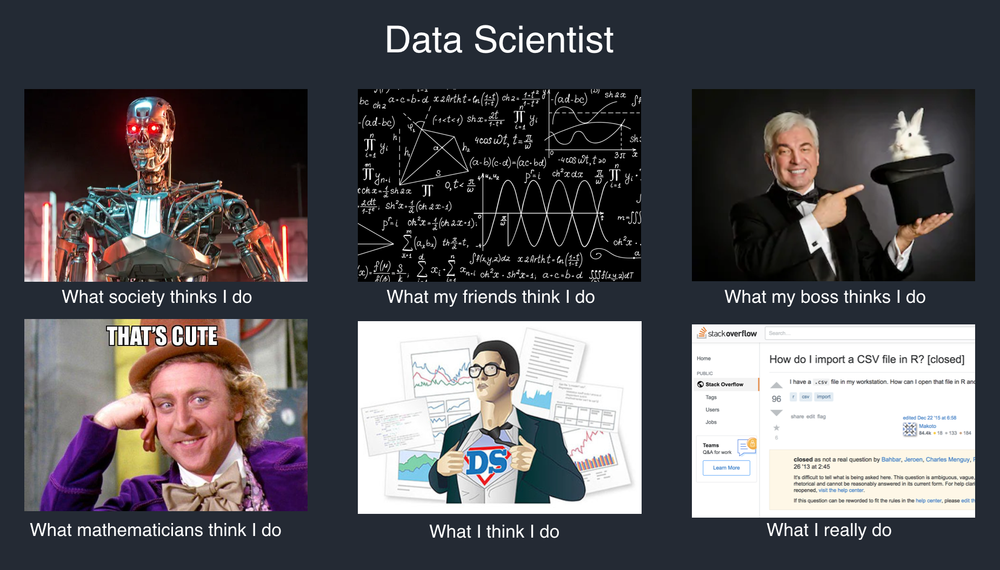
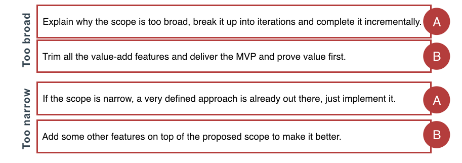
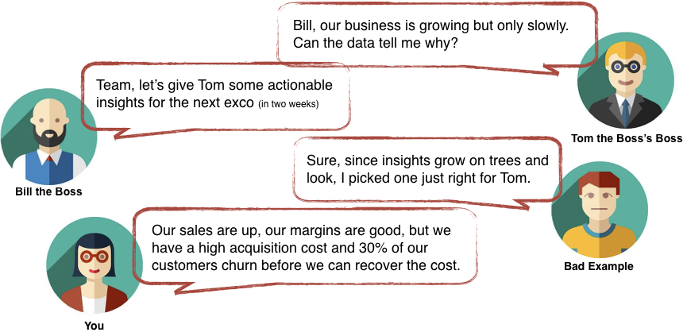
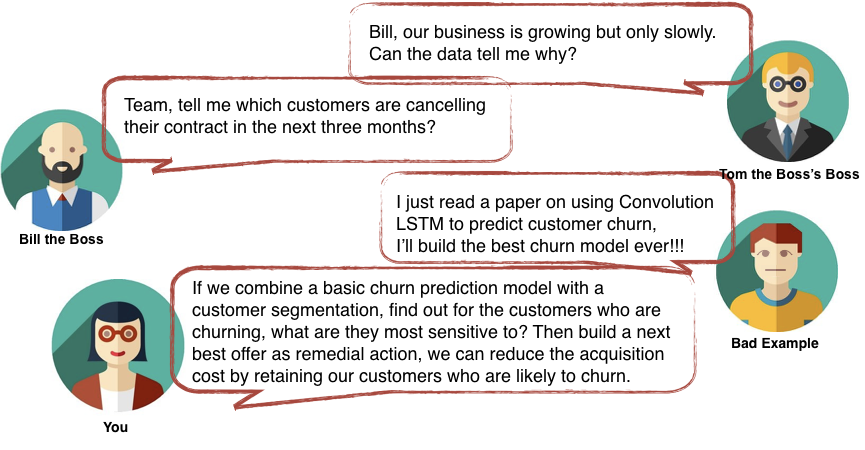
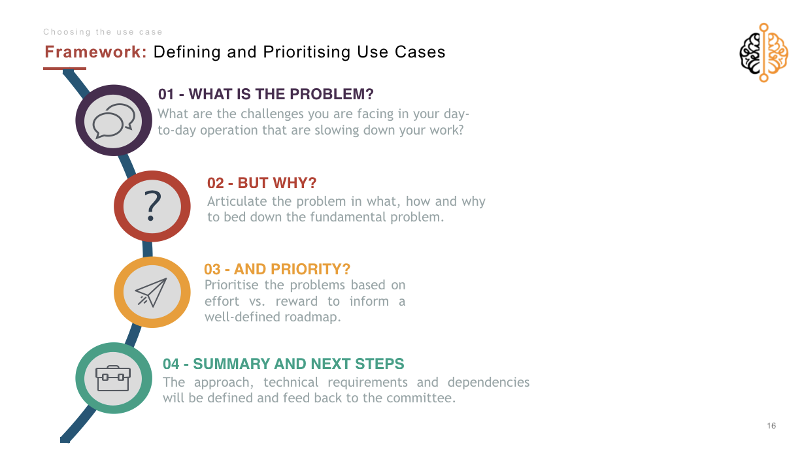

3 Tips on Defining a Data Science Project Scope with Business
Never be in trouble for delivering the wrong thing at the wrong time to the wrong person.
As a data scientist, you expect to get a job that lets you do cool stuff — Big data, Big machine (or cloud, like the grown-ups) and Deep neural networks. Reality quickly creeps in as you realise the mismatch between your model, your project manager’s timeline and your stakeholder’s expectation. What they needed (often) is not a 128-layer ResNet, but a simple select & group by query that delivers actionable insights.
There you are two months into your new job with your shiny model that just got shelved, grunting: “What is actionable insights anyway. Insights for who? Actioned with what?”

This article outlines the common traps in (not) defining the data science project scope, and tips and framework on how to diffuse or prevent these situations from occurring.
. . .
Trap 1: The scope is too broad or undefined
There has been a tremendous surge of using a data-led, data-driven and data-first approach that everyone in analytics has encountered this (in)famous business requirement:
“Tell me what the data says.”
Don’t get me wrong; I am a huge advocate for making decisions based on historical patterns and well-formulated predictions. However, as data practitioners, we also know that there is a variety of data types: often badly managed internal data, external data that everyone thinks is the holy grail of analytics and introverted data that says nothing.
It is even disconcertingly easy to manipulate the representation of data to convey the message you want to send. For example, by squishing the graph a bit your revenue growth suddenly looks like 5x instead of 0.5x. Even worse, by not asking the right questions and developing strong hypothesis tests, the data can even be used to augment your existing beliefs.
The danger of the broad and undefined scope is just that. It is so subjective to your prior beliefs, and most often, the business and the scientist are understanding and interpreting different things.
Trap 2: The scope is too narrow or defined
On the contrary of a too broad scope, you might also get some very enthusiastic stakeholders who read some article about churn modelling or customer segmentation on Harvard Business Review and ask you to build something that is so oddly specific.
When that happens, often our first instinct is to go into solution mode and start fantasising about that Convolution LSTM from that paper you read two weeks ago. Then we start rolling up our sleeves and cracking our fingers thinking…
Hey, I know how to do that.
After some blood, sweat and tears, you finally have something to show. At the demo session, the stakeholder looks at you, and you look back at him expecting a bonus or at least a pat on the back, but he asked confoundedly:
Ok that’s cool, but where’s the dashboard?
Wait what? It turns out he never wanted a churn model.
All he wanted is a dashboard with customers who have contracts that are coming to an end within the next three months. The purpose is not to predict who are renewing their contract, but for the frontline call centres to track their engagements with these customers. You stand up, pack up your beautifully constructed, efficiently optimised model and walk out.
. . .
Now take a deep breath (and don’t punch your computer
Let’s take a pause here and think back to when this happened to you. Take a look at the two options below related to Too broad or Too narrow scope. If you could go back in time and pick one, what would you do?

There are no right or wrong answers here (or ever), and these are all excellent agile approaches that can be used when requirements are unclear.
However, what I want you to do is not focus on how to reduce or redefine scope, but to ask more questions. Both the Too Broad or Too Narrow scenarios assume that the problem is correct and it is the solution we are uncomfortable with, but what if the problem is not even real? Without asking enough questions, you may unintentionally plaster over the symptoms and cover the root cause.
So if you take one thing away from this post, I want you to remember this again: Business does not know what they want.
It is your job to help business find out what they want.
. . .
Tip1: Find out what business is really asking
The reality is, most of our business stakeholders don’t understand what the possibilities with data science projects are. In framing their problem, there is usually a whole lot assumed but not explicitly said, so taking their requests with face value will lead to countless times of scope changes.
As the expert in your field, it is your job to guide the business through the jungle of jargons and translate their conquer-the-world-magic-button-in-the-cloud business question into something that can be solved, mathematically, and with their data.
Imagine, after some probing into the desired actionable insights, you discovered that what they are concerned about is “slow growth”. Whew, there, at least it limits the search of these magical insights into something related to growth. You can then provide some excellent insights related to growth, such as the acquisition cost and churn rate.

Unfortunately, it’s not easy to read another person’s mind, but fortunately, there are some probing questions you can use:
- What keeps you up at night?
- What are you trying to prove or disprove?
- What does your gut tell you?
- If you have the budget to do one thing well, what would that be?
Tip 2: Don’t just get thrown a problem, help define it
As a technical person, your passion for solving problems defines you. This characteristic is, at the same time, what ends up impeding you from solving the real problem. Fortunately, helping define the problem not only prevents scope changes down the line it is also super fun.
Sometimes, the problem is not immediately solvable and requires multiple steps to achieve — but again, the business probably doesn’t know that. Instead of being blamed on your churn model not helping in reducing churn, you can take matters into your own hands and build a roadmap for yourself (or your stakeholders because you should know better).

This is the time when you get to unleash all the creativity and be five years old again:
- Why do you want to know who is cancelling their contract?
- If you know this, what are you going to do about it?
- But why, why why?
There are tons of methods out there that can help you uncover the real problem (such as the 5 Whys, Root Cause Analysis and the Ishikawa (fishbone) diagram), so I will skip over in this post to spare us some time. I do encourage you to research and familiarise yourselves with them.
In closing, I want to share the workshop framework I used to unpack what problems my stakeholder was having.
Workshop Framework: define & prioritise use cases
Earlier this year, I was involved in a project to “help us create a rolling forecast of XYZ”. It seemed like a straight-forward time series forecasting problem, but when trying to finalise the requirements, I realised that there is a massive gap between what everyone perceives this “forecast model” will provide. It ranged from having a daily forecast (of a monthly time series?!) to specific call-to-action a user must perform to close the gap.
I rounded up a whole bunch of people from all different business units and held a workshop to find out what they really wanted. In the end, everyone agreed that they need a time-series forecast model, but what they want right now is a scenario planning tool.
This 3-hour workshop was how I found out:

Step 1: Get everyone venting
This is the part where you ask everyone what the problems are that they have in their lives. These can be big or small, long-term or short-term, what they observed or what they experienced, what they want or what they need.

Group all their anger and frustrations into various themes and summarise to the audience.
Step 2: Get everyone thinking
The most important part is not what they want, but why they want it. The whole of Step One aims to jolt their memories on all the issues they have in their world. This part of the exercise forces them to understand why they are frustrated. What is it that they want to achieve but cannot?

Step 3: Get everyone to fight about it
Sadly though, some dreams are bound to remain dreams forever, and it is of utmost importance that the business identifies that themselves. Often, different stakeholders will be in disagreement on the level of reward: the credit team wants all the users who are most likely to default, the call centre wants the users most likely to upgrade, and the finance team wants the users with the highest lifetime value. You can explain why some items are difficult to implement, but as to the reward, the business stakeholders will have to fight it out themselves.

Lastly: Have a roadmap.
Have a roadmap, if not for the business then for yourself. Of course, requirements will always change, but having a forward-looking view helps to keep everyone on track. The end goal is often a long hard road, so keep your eye on the ball and let go of the 0.2% accuracy.